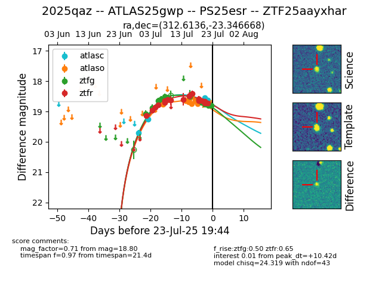

Target ZTF25aayxhar at 2025-07-23 19:44, see:
FINK: fink-portal.org/ZTF25aayxhar
Lasair: lasair-ztf.lsst.ac.uk/objects/ZTF25aayxhar
ALeRCE: alerce.online/object/ZTF25aayxhar
TNS: wis-tns.org/object/2025qaz
YSE: ziggy.ucolick.org/yse/transient_detail/2025qaz
alt names
ZTF25aayxhar (ztf,fink)
2025qaz (tns,yse)
ATLAS25gwp (atlas)
PS25esr (panstarrs)
coordinates:
equatorial (ra, dec) = (312.6136,-23.34667)
galactic (l, b) = (22.6267,-35.88942)
photometry
last atlasc=18.62, atlaso=18.71, ztfg=18.80, ztfr=18.72
5 atlasc, 9 atlaso, 13 ztfg, 18 ztfr detections
